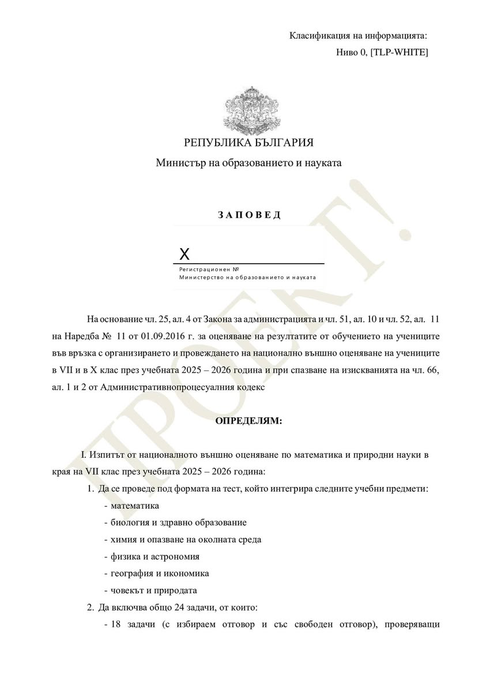
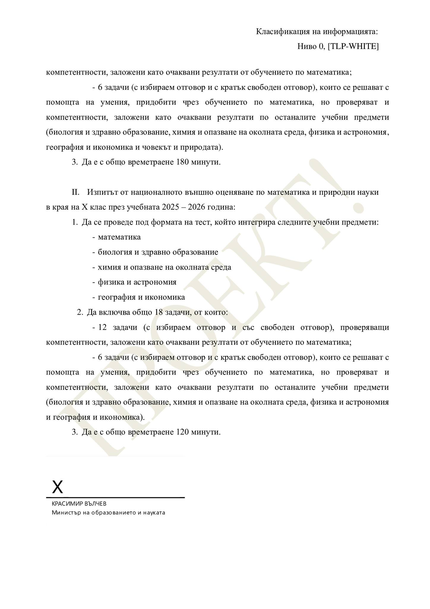

Проект на заповед за националното външно оценяване по математика и природни науки в края на VII клас през учебната 2025 – 2026 година.
Да се проведе под формата на тест, който интегрира следните учебни предмети:
- математика
- биология и здравно образование
- химия и опазване на околната среда
- физика и астрономия
- география и икономика
- човекът и природата
2. Да включва общо 24 задачи, от които:
- 18 задачи (с избираем отговор и със свободен отговор), проверяващи компетентности, заложени като очаквани резултати от обучението по математика;
- 6 задачи (с избираем отговор и с кратък свободен отговор), които се решават с помощта на умения, придобити чрез обучението по математика, но проверяват и компетентности от останалите предмети.
3. Да е с общо времетраене 180 минути.

